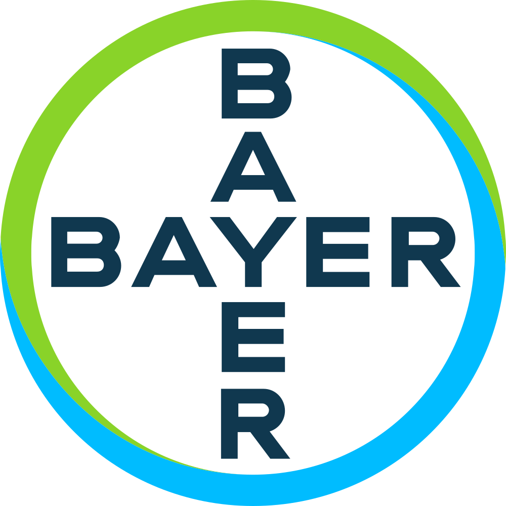
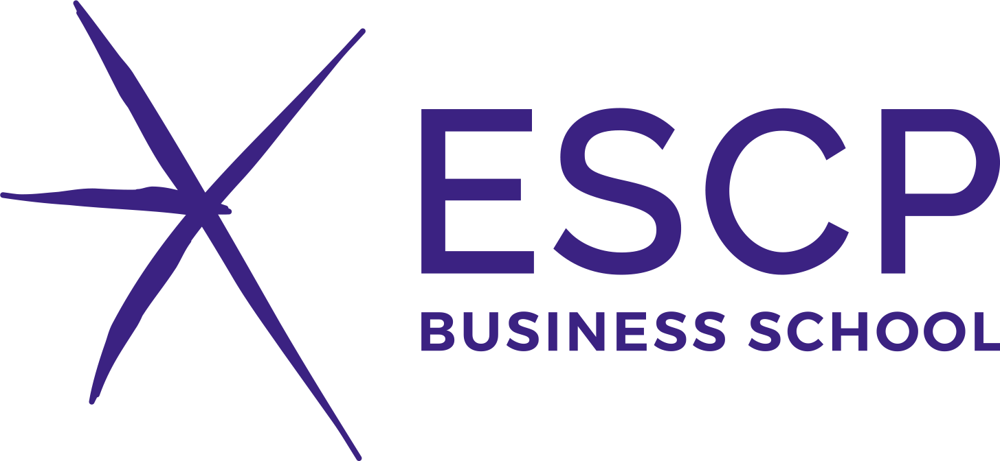

The AI operating system for field service
A personal assistant for every technician. A team of agents for the office.


Built by people from





The AI operating system for field service
A personal assistant for every technician. A team of agents for the office.

Built by people from
One system for the field and the office
Unify your data in one place
Secure connections across your FSM, CRM, ERP and supplier portals.
IntegrationsBuild knowledge that compounds
Turn every call, photo and close-out into the full history of every machine, for the whole company to use.
IntelligenceAccelerate your output
Run the work around every job end to end with agents built for field service: the warranty claim, the missing invoice, the van restock.
AgentsGive every technician a personal assistant
They call or text Kenner on the phone they already have. It answers from past jobs and files the report from one call.
TechniciansKenner gets it done
Choose a moment
Choose an app
What Kenner looked up
What it adds up to. More revenue from the same team.
More
revenue
revenue
Unbilled work gets invoiced. Quotes and contract proposals go out the day your technician spots the work.
More
jobs
jobs
per technician, every week. Less time troubleshooting, calling around and typing reports.
Fewer
repeat visits
repeat visits
The fix holds the first time, so the same unit doesn’t bring you back.
Less
downtime
downtime
Units are back up sooner, so your customers lose less time.
More
billed work
billed work
Work that was never invoiced, or fell outside the contract, is found, with the invoice ready to send.
More
follow-on work
follow-on work
What your technicians notice on site, a worn part or an ageing unit, goes out as a quote or contract proposal the same day.
More
jobs
jobs
per technician, every week. Less time troubleshooting, calling around and typing reports.
Fewer
repeat visits
repeat visits
The fix holds the first time, so the same unit doesn’t bring you back.
Faster
ramp-up
ramp-up
New technicians go out alone sooner, because what your experienced people know is one call away.
Less
downtime
downtime
Units are back up sooner, so your customers lose less time.
Adoption first. The data follows.
Only with strong adoption in the field can you build the data foundation for the future.
Adoption
Technicians don't open a new app. They call or text Kenner, because it helps on the job and does their admin.
No new app and no training day. Technicians call or text Kenner, because it helps on the job and does their admin.
Data
Every call, text and photo becomes a job record, linked to the machine, the part, the fault and the customer. The whole company runs on it.
Most of what happens on a job is never written down. Here every call, text and photo becomes a job record, linked to the machine, the part, the fault and the customer.
Built for the know‑how you guard most. Your data stays yours.
Bring in manuals, service reports, price lists and what your best technicians know, without worrying where it goes.
- You own the data. Job contents stay yours and are written into your systems.
- Kenner asks first. Nothing that costs money or speaks for your company goes out without a yes.
- Every action is visible. Each one shows with its sources.
ISO 27001Built to its requirementsSOC 2Built to its criteriaGDPRA data processing agreement with every pilot
Start with one team. Live in a week.
- In the first weekConnected and in their contacts
We connect to your FSM, CRM, ERP, KMS and sensors. Five to ten technicians save Kenner as a contact. No app, no training day.
- For two weeksKenner works real jobs
A brief before the job, answers on it and the report after.
- At the endReal KPI improvements
What changed, in your own numbers. You decide on the rollout from there.
Common questions. Straight answers.
Who is it for?
Service teams that keep equipment running on site, whether contractors, manufacturers or in-house: HVAC and refrigeration, elevators, fire protection, heat pumps, medical devices, forklifts, data centers, food equipment, wind turbines and machinery. If your technicians diagnose and repair equipment in the field, it’s built for you.
How is this different from a chatbot on our manuals?
A chatbot searches your documents and pastes together an answer. Kenner builds a knowledge graph of your service instead: every unit, every job done on it, its alarms, its parts and its manual, linked together. So it answers for the unit in front of the technician, shows its sources and says when it doesn’t know. Every job your team finishes adds to the graph.
And Kenner doesn’t just look up answers. It carries out real tasks for you: it writes the quote, sends the invoice and orders the parts, in the systems you already run.
Does Kenner replace our FSM or ERP?
No. Kenner works with the FSM, ERP and CRM you already run. It reads from them before the job and writes the report, parts and follow-ups back to them after it.
What does Kenner do without asking?
Anything that costs money or speaks for your company waits for a yes: part orders, quotes, claims and customer messages are drafted first and go out only once someone approves. You decide who gives that yes, and what may run without one. Every action shows with its sources.
Do our technicians have to learn a new app?
No. They save Kenner as a contact and use WhatsApp, iMessage, Teams or a normal phone call, so it works on the phone they already have. A voice note after the job is enough for the report.
Is our data secure?
Your data stays yours and stays in your systems. Every pilot comes with a data processing agreement under GDPR, and Kenner is built to the requirements of ISO 27001 and SOC 2.
How fast can we start?
Within a week. We connect to your systems, your technicians save Kenner as a contact, and the first briefs and reports run in the same week. A pilot runs two weeks with five to ten technicians, measured against your own numbers.